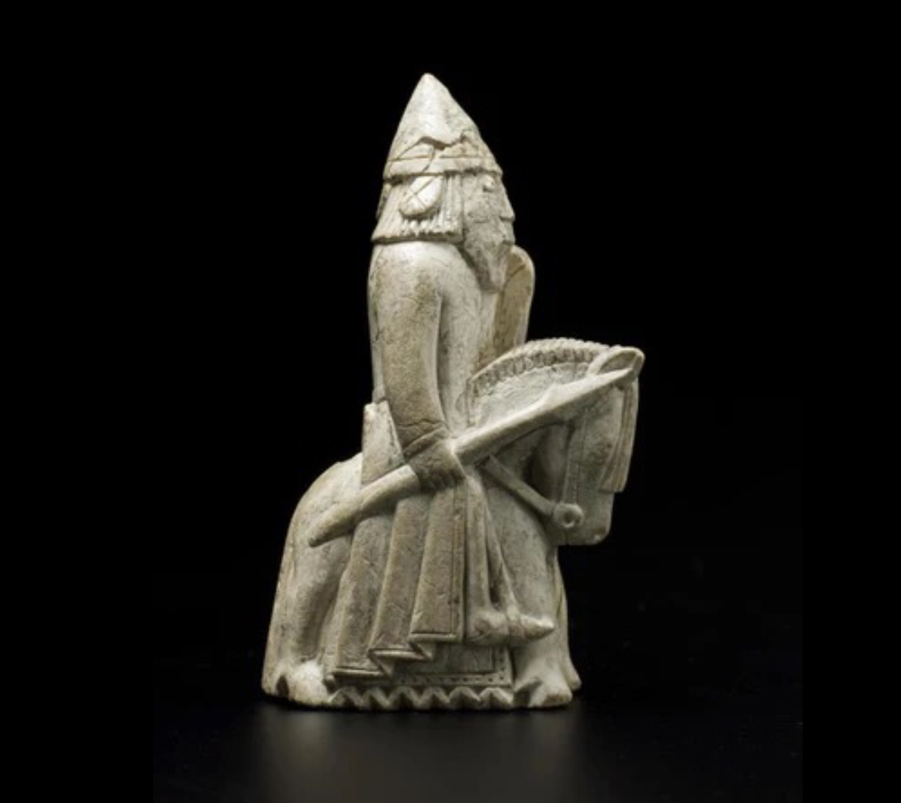

The knight, represented as a horse in most depictions, has been part of chess since its early origins. In the game of Chaturanga, knights were much like modern knights, offering unique moves. The knight's ability to jump over other pieces made it one of the most dynamic pieces on the chessboard.
The knight's distinctive movement pattern—forming an L-shape—has been consistent through time, making it a versatile and unpredictable piece in chess strategies.
